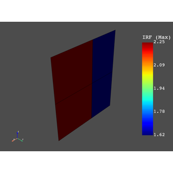
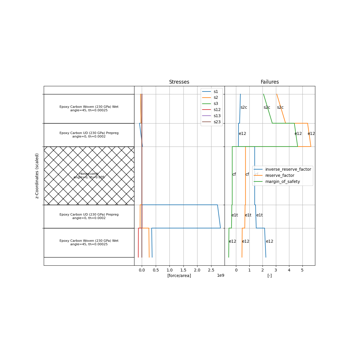
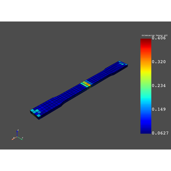
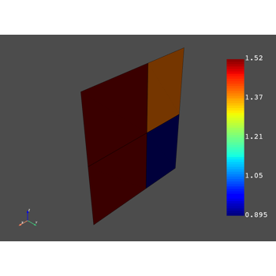
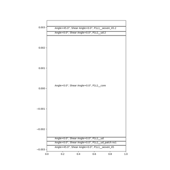
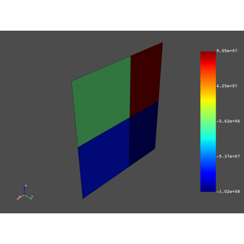
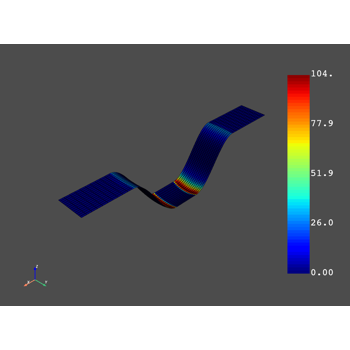
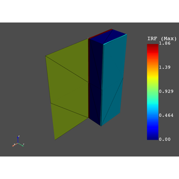

Examples#
These examples demonstrate the behavior and usage of PyDPF Composites.

Composite Failure Analysis

Sampling Point

Failure Analysis for Short Fiber Composites
Failure Analysis for Short Fiber Composites

Material Properties and Custom Failure Criterion
Material Properties and Custom Failure Criterion

Get Lay-up Properties

Filter Result Data by Different Criteria
Filter Result Data by Different Criteria

Interlaminar Normal Stresses

Post-process an Assembly